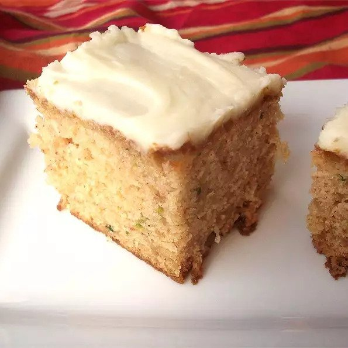

Zucchini Bars

Zucchini Bars
This snack cake is so delicious that my family can eat the entire batch in one day! Very easy and moist.
Ingredients
- 3 eggs
- 1 cup vegetable oil
- 2 cups white sugar
Steps
- Preheat oven to 350 degrees F (175 degrees C). Grease a 9x13 inch pan.
- In a large bowl, mix together the eggs, oil, sugar and vanilla until well blended. Combine the flour, baking powder, baking soda and salt; stir into the sugar mixture. Mix in the zucchini. Spread the batter evenly into the prepared pan.
- Bake in preheated oven until a toothpick inserted into the center comes out clean, 20 to 25 minutes.
- To make the frosting, blend together the margarine, cream cheese and confectioners' sugar until smooth. Spread over warm cake. Allow cake to cool completely before cutting into bars.